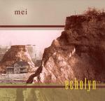

Home Artist links Label link

Echolyn - Mei
| Artist: | Echolyn |
| Title: | Mei |
| Label: | Velveteen Records |
| Length(s): | 49 minutes |
| Year(s) of release: | 2002 |
| Month of review: | [01/2003] |
Line up
Christopher Buzby - keyboards, vocals
Brett Kull - guitars, vocals
Paul Ramsey - drums, percussion
Ray Weston - bass, vocals
Tracks
Summary
After a long silence Echolyn returned to the fore with the song oriented album Cowboy Poems Free. With Mei they choose the exact opposite, the album counting just one, 49 minute, track.
The music
The initial section of the album is rather peaceful. Tranquil vocals and instruments, hardly any rhythm. Over a period of minutes the band build towards a highpoint. By now the story is underway. A story told in one track, which could just as easily have been a whole score, judging from the many different styles and atmospheres.
Undoubtedly this album is a concept album, but the booklet tells us nothing, it's filled with pictures which more create an atmosphere than make a point, all with one or two phrases from the lyrics, such as "I lost strength in joy" or "God won't perform here anymore".
Conclusion
Mei is subtle and strong. Mysterious and melancholic. Pushing yet tranquil. Complex yet simple. Mei is Echolyn. This album doesn't appear as unaccessible or over the top as for instance As The World. Having said that, it took me more listens than normally to start to appreciate it for what it is.
Downside of this album is that you can't really just play a song of it, listening to it therefore asks a certain commitment. A commitment, however, that is worthwhile: Echolyn have produced yet another very strong album.
© Roberto Lambooy